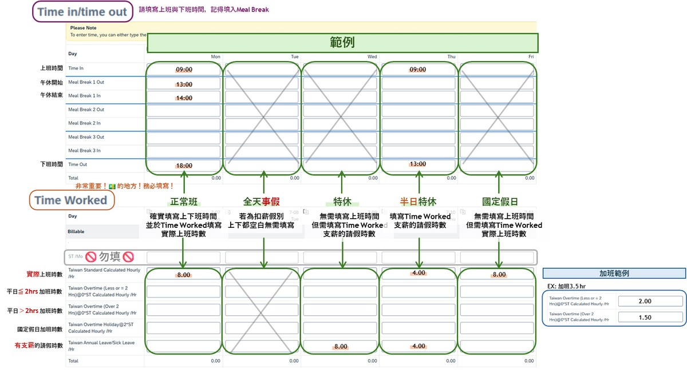
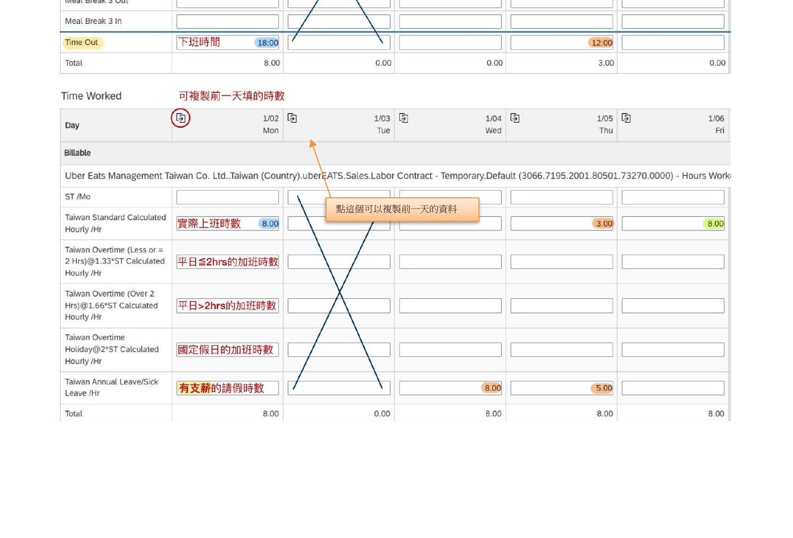
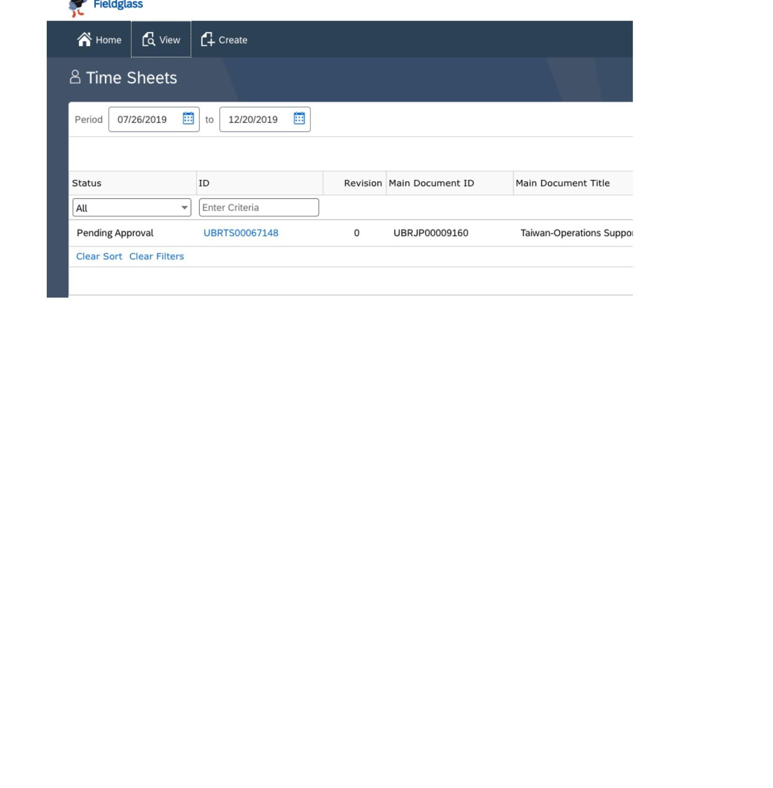

Timesheet 流程
建立 Timesheet
1
建立方式
Create
→
Time Sheet
截圖 — 待上傳
填寫出勤時間
2
Time In / Time Out / Meal Break
請依照實際上下班時間填寫，並記得填入午休時間。
注意：ST/MO 欄位第一列請勿填寫，系統將自動計算。

各種出勤狀況填寫
正
正常班
確實填寫上下班時間，並於 Time Worked 填寫實際上班時數。
假
事假／全天請假
若為扣薪假別，上下班欄位留白，Time Worked 無需填寫。
特
特休
無需填寫上下班時間，但需於 Time Worked 填寫支薪的請假時數。
半
半日特休
於 Time Worked 填寫支薪的請假時數（例如半天 4 小時）。
國
國定假日
無需填寫上下班時間，但需於 Time Worked 填寫實際上班該拿到的時數。
核心重點：Time Worked 填寫的是你正常上班應得的時數，而非加班時數。

加
加班
加班前須取得主管事前核准，並提供核准紀錄給 HR。加班後依核准內容填寫。
注意：未事先取得核准的加班，恕無法受理報加班費。
提交 Timesheet
→
Submit 送出表單
確認所有出勤資料填寫正確後，按下 Submit 送出。

狀態說明
Pending Approval
主管尚未核准，請耐心等候或提醒主管。
Invoice
主管已核准，等待 Agency 確認。
修改 Timesheet
狀態：Pending Approval
需由主管駁回
請聯繫主管退回後再修改
狀態：Approved
聯繫 Sandy / Isabella
請說明修改原因
提交期限
每月截止時間：每月最後一個上班日 23:59 前完成提交。逾期將影響當月薪資核算。